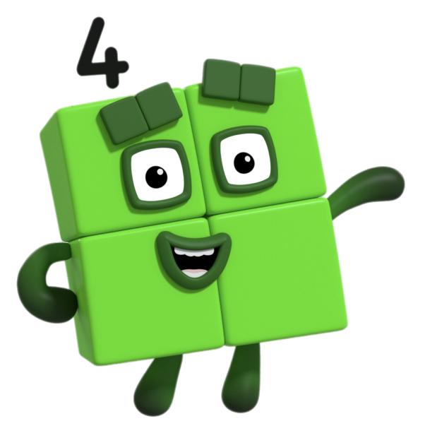
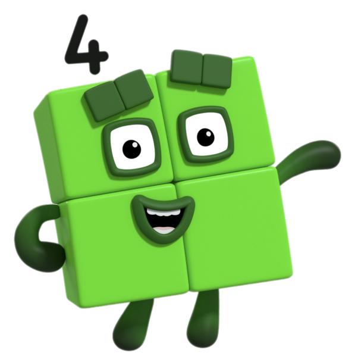

La app más divertida y educativa y para niños de 3 años
Numberblocks World es una divertida aplicación de vídeo a la carta y juegos por suscripción dirigida a niños a partir de 3 años, con un grupo de edad principal de 4 a 6 años, creada por el equipo de Alphablocks Ltd. y Blue Zoo Animations Studio, ganador de un premio BAFTA.
 


Los niños descubrirán lo divertido que puede ser aprender matemáticas. A través de personajes animados y desafíos interactivos, podrán sumar, restar y entender conceptos básicos de manera fácil y entretenida. ¡Cada número cobra vida para hacer que las matemáticas sean emocionantes!

Con NumberBlocks, los niños encontrarán emocionantes retos en cada nivel, diseñados para hacer que el aprendizaje sea tan divertido como un juego. ¡Cada desafío es una nueva aventura matemática!
Diviértete e invita a tus amigos, desafíalos y gana premios.
Entrena a UNO y Comparte lo que Aprendes!
En NumberBlocks, deberás enseñar a UNO cada lección que aprendas, ayudándolo a crecer y superar nuevos desafíos matemáticos. ¡Conviértete en su mejor guía! Se su mejor amigo y diviértete con él.